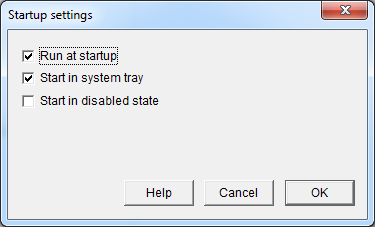

|
Run at startup |
Set / clear the Windows registry setting to schedule the running of DxWnd at the system startup. Depending on the DxWnd capabilities (running as an administrator or not) the flag will enable the task using the registry key that allows for the operation. Beware: when starting DxWnd as an administrator, the system will prompt the user for the permission. |
|
Run in system tray |
If enabled, DxWnd will run at startup iconized in the system tray. |
|
Start in disabled state |
If enabled, DxWnd will run at startup initially in hook disabled state. |